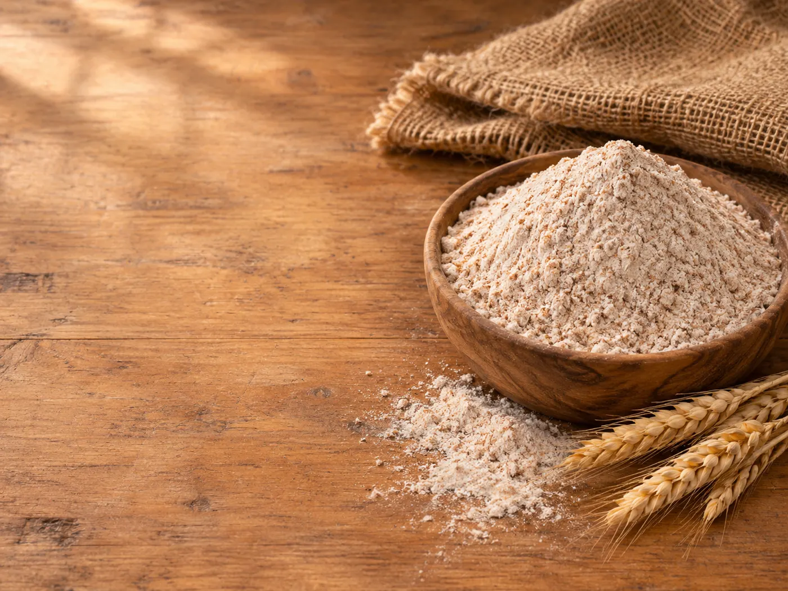

OrderOrder
OrderOrderOurs is milled slowly on natural stone. Fresh, every week.

 Concept image
Concept image
Freshly milled, delivered weekly
We keep changing everything around us. Our skincare, our cooking oil, even our utensils, because we research what is best for our family. So why don't we stop and think about our atta? Its quality, where it comes from, how it is made. We just take their word for it.
Isse kisi ne poocha?

Four things we never change.